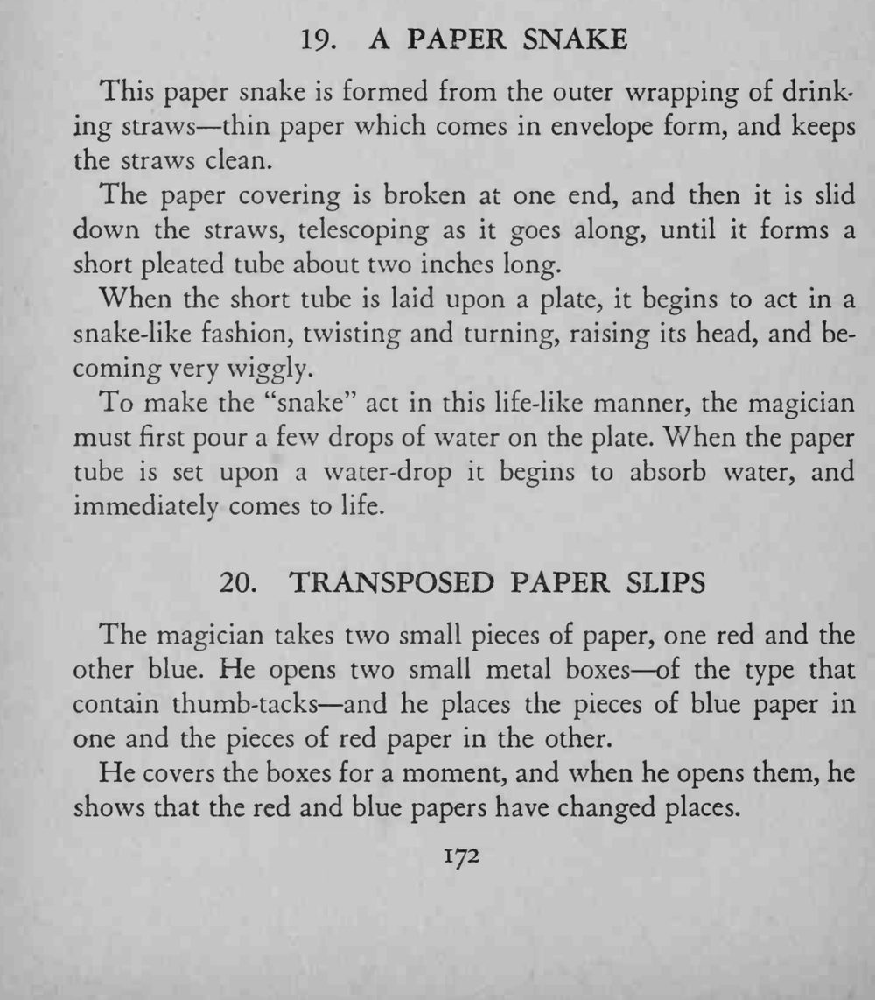
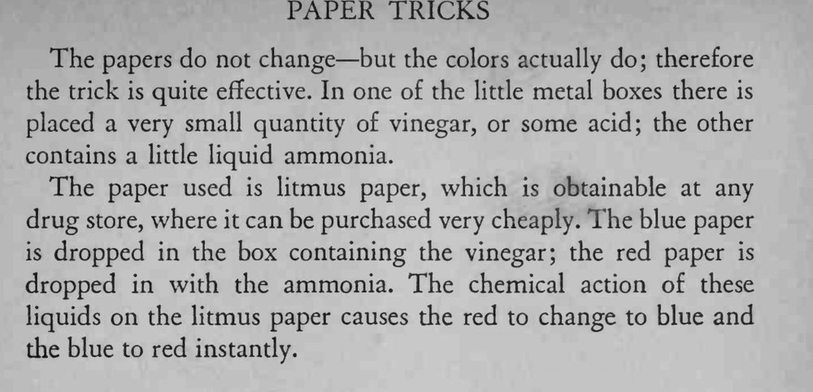

一小段纸管放在盘子里，滴上水后就扭来扭去，像一条活蛇。
水几滴即可，纸管要留一点能吸水的纸边；原文后半混入了另一则效果，卡片只取纸蛇部分。


This paper snake is formed from the outer wrapping of drinking straws thin paper which comes in envelope form, and keeps the straws clean. The paper covering is broken at one end, and then it is slid down the straws, telescoping as it goes along, until it forms a short pleated tube about two inches long. When the short tube is laid upon a plate, it begins to act in a snake-like fashion, twisting and turning, raising its head, and becoming very wiggly. To make the "snake" act in this life-like manner, the magician must first pour a few drops of water on the plate. When the paper tube is set upon a water-drop it begins to absorb water, and immediately comes to life. The magician takes two small pieces of paper, one red and the other blue. He opens two small metal boxes of the type that contain thumb-tacks and he places the pieces of blue paper in one and the pieces of red paper in the other. He covers the boxes for a moment, and when he opens them, he shows that the red and blue papers have changed places. The papers do not change but the colors actually do; therefore the trick is quite effective. In one of the little metal boxes there is placed a very small quantity of vinegar, or some acid; the other contains a little liquid ammonia. The paper used is litmus paper, which is obtainable at any drug store, where it can be purchased very cheaply. The blue paper is dropped in the box containing the vinegar; the red paper is dropped in with the ammonia. The chemical action of these liquids on the litmus paper causes the red to change to blue and the blue to red instantly.